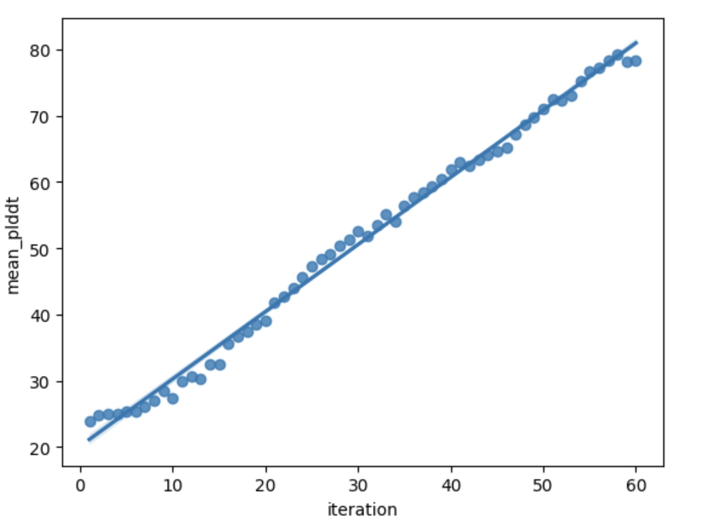
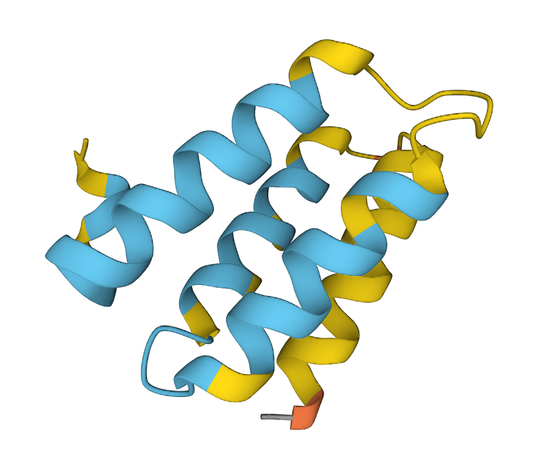
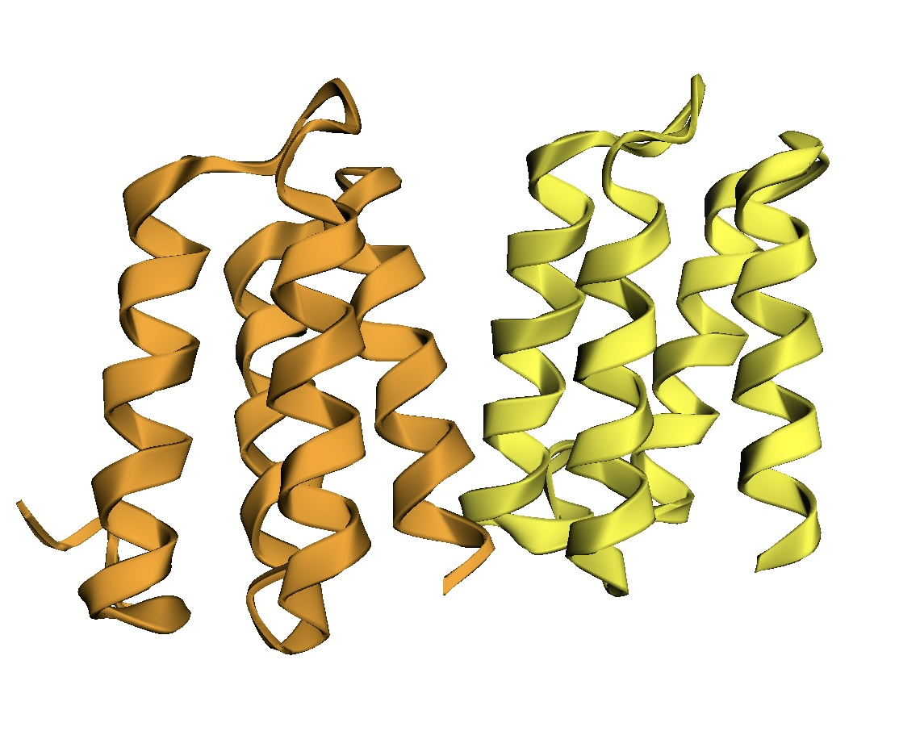

2. How do changes in a sequence mediate changes in its structure , and in turn function?
1. On two Quadro RTX 5000 GPUs, after 60 iterations, the model reaches the mean plddt of around 80 with the variance of less than 0.5.
2.Being economically expensive, as it requires multiple fast GPUs with high memory capacities.
3. Obtaining the translational symmetry for dimers with lengths of 200.
4. No matching sequences between the generated proteins and natural ones were found in BLAST analysis.


